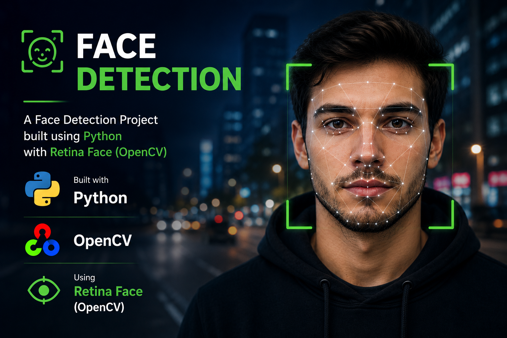

Creating a Face Detection Flask API using RetinaFace
In this blog, we'll guide you step by step on how to create a Face Detection API using Flask and the RetinaFace deep learning model. The API will process Base64-encoded images, detect faces asynchronously, and return the results to the user.
Also, basic familiarity with Python, Flask and Base64 encoding is recommended.
Prerequisites
Before we begin, ensure that you have the following installed:
- Python 3.8+ — You can download it from https://www.python.org/downloads/
- Then set your Python path in Environment variables
- Python Extension for VS Code — Install this extension from the VS Code Marketplace.
Step 1: Set Up Your Development Environment
1.1 Open VS Code
Open VS Code and create a new folder for your project. You can do this by selecting File > Open Folder and either choosing or creating a new folder.
1.2 Create and Activate a Virtual Environment
To keep your project dependencies isolated, you’ll need to create a virtual environment. Follow these steps:
- Open the terminal in VS Code by selecting Terminal > New Terminal.
- Navigate to your project folder in the terminal.
D:\folder_name>
First Check Python proper installed or not python --version
Create a new virtual environment:
python -m venv venv
Activate the virtual environment:
On Windows:
venv\Scripts\activate
On macOS/Linux:
source venv/bin/activate
Once activated, you should see (venv) in your terminal prompt,
indicating that the virtual environment is active.
Like :
(venv) D:\folder_name>
Step 2: Install Required Dependencies inside venv
2.1 Create a requirements.txt File
Create a requirements.txt file in your project folder and list the required packages:
flask
opencv-python
numpy
retina-face
tensorflow==2.11.0
tf-keras
pylance
requests
2.2 Install Dependencies
Run the following command in the terminal to install all the dependencies listed in requirements.txt:
pip install -r requirements.txt
These packages will allow us to:
- Flask: Create a web API.
- OpenCV: Handle image processing.
- NumPy: Work with numerical data.
- RetinaFace: Perform high-performance face detection.
- TensorFlow (2.11.0): Train machine learning models.
- tf-keras: Use TensorFlow's high-level Keras API for neural networks.
- Pylance: Enhance Python development in VS Code with fast, type-safe features. (optional)
Step 3: Create the Flask Application
3.1 Initialize Flask in app.py
Create a new file called app.py in your project folder. At the top of the file, initialize all dependencies:
from flask import Flask, request, jsonify
app = Flask(__name__)
3.2 Set Up RetinaFace for Face Detection
Import the RetinaFace library, which will be used to detect faces in images:
from retinaface import RetinaFace
3.3 Create the Face Detection Function
Define a function to perform face detection using the RetinaFace model:
def detect_faces(image):
faces = RetinaFace.extract_faces(image)
return faces
This function will use the RetinaFace model to detect faces and return detailed data, including bounding boxes and facial landmarks.
Step 4: Handle Asynchronous Processing
Face detection can be computationally expensive, so we will process it asynchronously to avoid blocking other requests.
4.1 Set Up Asynchronous Processing with ThreadPoolExecutor
Python’s ThreadPoolExecutor allows us to handle tasks concurrently without blocking the main thread.
from concurrent.futures import ThreadPoolExecutor
executor = ThreadPoolExecutor(max_workers=4) # Initialize a thread pool
4.2 Define the Face Detection API Endpoint
@app.route('/detect', methods=['POST'])
def detect_face():
data = request.get_json()
base64_image = data.get('image') # Extract the Base64 image from the request
if not base64_image:
return jsonify({'error': 'No image provided'}), 400
# Process the image asynchronously
future = executor.submit(process_image, base64_image)
result = future.result() # Wait for the result to be ready
return jsonify(result)
4.3 Decode and Process the Image
We need to decode the Base64 image string into an image format, process it, and then re-encode it back into Base64 for the response.
4.3.1 Decode the Base64 Image
import base64
import numpy as np
import cv2
def decode_base64_image(base64_image):
image_data = base64.b64decode(base64_image)
np_array = np.frombuffer(image_data, np.uint8)
return cv2.imdecode(np_array, cv2.IMREAD_COLOR)
4.3.2 Re-encode Image to Base64
def encode_image_to_base64(image):
_, buffer = cv2.imencode('.jpg', image)
base64_image = base64.b64encode(buffer).decode('utf-8')
return base64_image
4.4 Process the Image
Finally, define the function that will handle the entire pipeline—decoding the image, detecting faces, and re-encoding the image:
def process_image(base64_image):
# Decode the Base64 image
image = decode_base64_image(base64_image)
# Detect faces using RetinaFace
faces = detect_faces(image)
# Encode the processed image back into Base64
processed_image = encode_image_to_base64(image)
return {
'faces': faces, # Detected face data
'image': processed_image # Base64 encoded processed image
}
Step 5: Run the Flask Application
5.1 Run the Application in Development Mode
At the bottom of your app.py, add the following code to run the Flask app:
if __name__ == '__main__':
app.run(debug=True)
5.2 Start the Flask Server
In the VS Code terminal , run the following command:
python app.py
This will start the Flask server at http://127.0.0.1:5000. The Face Detection API is now ready to receive POST requests.
Step 6: Testing the API
You can use tools like Postman or cURL to send POST requests with Base64-encoded images to the /detect endpoint.
Example JavaScript Frontend
Here’s how you can send the Base64-encoded image from a frontend application:
let base64Image = "your_base64_encoded_image_here"; // Base64 encoded image
fetch('http://127.0.0.1:5000/detect', {
method: 'POST',
headers: {
'Content-Type': 'application/json',
},
body: JSON.stringify({
image: base64Image
})
})
.then(response => response.json())
.then(data => {
console.log('Detected Faces:', data.faces);
console.log('Processed Image (Base64):', data.image);
// Display the processed image
document.getElementById("processedImage").src = "data:image/jpeg;base64," + data.image;
})
.catch(error => {
console.error('Error:', error);
});
In this example, the processed image (Base64) is set as the source for an img tag with id="processedImage".
Step 7: Handling the API Response
7.1 Structure of the Response
When the face detection task completes, the server will return a JSON response with two main components:
- faces: A list containing information about each detected face.
- image: The Base64-encoded processed image with face detection annotations.
Example response:
{
"faces": [
{
"box": [50, 60, 200, 250],
"landmarks": {
"left_eye": [100, 120],
"right_eye": [180, 120],
"nose": [140, 180],
"mouth_left": [115, 220],
"mouth_right": [170, 220]
}
}
],
"image": "base64_encoded_image_here"
}
7.2 Handling Errors
In case of any errors, the API will return an error message. For instance:
{
"error": "No image provided"
}
If something goes wrong, ensure that the Base64 image is included in the request.